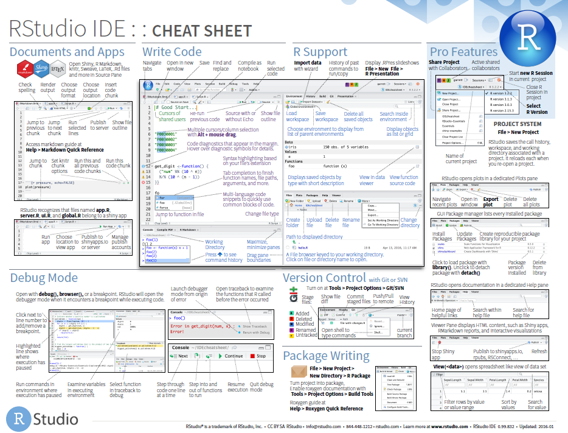
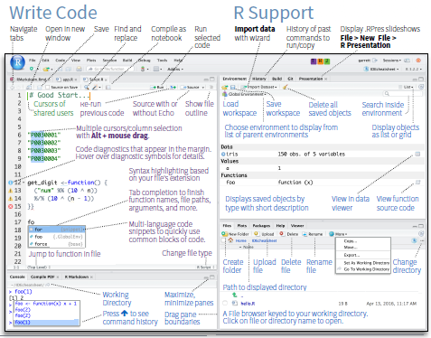

Lecture 02: R and RStudio
EEFE 530
Agenda
Today
Why R?
- Overview
- Installation
- RStudio
Basics
- Objects
- Classes
- Functions
- Data Frames
- Packages
- Data
- Plotting
- Regression
R
What is it?
The R project website:
R is a free software environment for statistical computing and graphics. It compiles and runs on a wide variety of UNIX platforms, Windows and MacOS.
What does that mean?
R is a statistical computing language that is flexible for many tasks used in applied econometrics.
R has a ton of online help forums in addition to help files by package developers (e.g., Stack Overflow). -more on packages soon.
R is free and open source.
Why are we using R?
R is free and open source—saving both you and the university money.
Economists are (gradually/quickly??) switching to R along with data scientists, and researchers in other fields.
More employers favor R over proprietary software like Stata.
R is very flexible and powerful—adaptable to nearly any task, e.g., ’metrics, spatial data analysis, machine learning, web scraping, data cleaning, website building, teaching.
Related: R imposes no limitations on your amount of observations, variables, memory, or processing power and allows multiple objects at once (more on objects soon).
With work you’ll develop a marketable tool that will help with your research or other career paths.
I personally shifted from Stata to R. Sometimes I go back and forth (not recommended).
The install
Installing R is fairly straightforward, but it occasionally involves challenges for older computers. You also have to keep version updates on your mind because some packages are version specific.
Step 1: Download (r-project.org) and install R for your operating system.
Step 2: Download (rstudio.com) and install RStudio Desktop for your operating system.
I always just use all the default prompts for the installation.
DataCamp has a nice tutorial on installing R and RStudio for Windows, Mac, and Linux operating systems.
RStudio
RStudio
RStudio is an integrated development environment (IDE) for R.
Another way of saying this is that RStudio is the front end and R is the back end.
There are other options, but RStudio is free, widely used, and pretty user-friendly.
We’ll now take some time to explore some of the features of RStudio


RStudio
Download: https://rstudio.com/products/rstudio/download/
Cheat Sheets: https://rstudio.com/resources/cheatsheets/
RStudio Cheat Sheet: https://rstudio.com/resources/cheatsheets/raw/master/rstudio-ide.pdf
R Basics
Basic structure
Okay - back to R. There are a few basics to keep in mind with R:
1. Everything is an object.
foo
2. Every object has a name and value.
foo <- 2
3. You use functions on these objects.
mean(foo)
4. Functions come in libraries (packages)
library(dplyr)
5. R will try to help you.
?dplyr
6. R has its quirks.
NA; error; warning
Objects
Everything is an object
Define an object
Now a is in the R environment
Objects
We can define and perform functions on multiple objects
the <- operator assigns an object e.g. (c <- a + b) and then just typing object into the console returns the object’s value e.g. c
Classes
Objects are in a certain class
Let’s define some more objects
Classes
What do these classes look like?
Classes
We can use the class function to determine an object’s class
Functions
Most work in R will require functions
R has many built in functions
meansdmaxclasssummary
Many more functions are available through packages (more on that soon)
class: clear
Help and functions
Q: How do we know which arguments a function requires/accepts?
A: ?
Meaning you can type ?mean into your R console to find the help file associated with the functions/objects named mean.
Double bonus: Use ??mean to perform a fuzzy search for the term mean in all of the help files.
Example function: mean
Q: How do we know which arguments a function requires/accepts?
A\(_2\): RStudio will also try to help you.
- Type a name (e.g.,
mean) into the console; RStudio will show you some info about the function. - After you type the name and parentheses (e.g.,
mean()), press tab, and RStudio will show you a list of arguments for the function. - Similar functionality in the script section when you hover over or start typing a function.
We can write our own functions
Our function will show up in the
Environmentpane of RStudio.Functions take inputs.
- In our case
arg1,arg2, andarg3
- In our case
Then functions perform some operation on those inputs.
class:clear
We can also save the output of a function to an object
Data frames
Data frames are the base spreadsheet style way of storing data in R
#> x1 x2 x3 x4 x5
#> 1 2 2 a a 1
#> 2 4 4 b b 2
#> 3 6 6 c c 3- Now we have a data frame called
dfthat has the variables (columns)x1, x2, x3, x4, x5 - We can have the variables as existing objects (
x1-x4)or newly created data (x5)
We isolate a specific column of a data frame with $
We can perform operations/functions of these
We can add variables to data frames
We can combine data frames by rows (rbind) or by columns (cbind)
#> x1 x2 x3 x4 x5 x6 x7
#> 1 2 2 a a 1 3 1
#> 2 4 4 b b 2 3 2
#> 3 6 6 c c 3 3 3
#> 4 2 2 a a 1 3 1
#> 5 4 4 b b 2 3 2
#> 6 6 6 c c 3 3 3#> x1 x2 x3 x4 x5 x6 x7 x1 x2 x3 x4 x5 x6 x7
#> 1 2 2 a a 1 3 1 2 2 a a 1 3 1
#> 2 4 4 b b 2 3 2 4 4 b b 2 3 2
#> 3 6 6 c c 3 3 3 6 6 c c 3 3 3Data frames
We can create new data frames or write over an existing data frame
We can create new data frames or write over an existing data frame
Packages
Packages
- You can install packages through the function
install.packages()function in R- You need to write the package name in quotes e.g.
install.packages('data.table) - You only need to install a package once (until you update R)
- You can also install packages through the package tab in RStudio
- You need to write the package name in quotes e.g.
- You can load a package using
library()function- You do not need quotes when loading a package
- You need to load packages every time you open R
Packages
- Packages are open source and provide access to useful functions and data
- You can get help on a package with the
?function e.g.?data.table - We’ll get familiar with packages with both
data.tablefor using data andggplot2for plotting.
Data
Data
- We will know start working with data using the
data.tablepackage - Recall our data frame, let’s make it a little bigger because that’s where
data.tablebecomes really helpful
#> x1 x2 x3 x4 x5 x6 x7
#> 1 2 2 a a 1 3 1
#> 2 4 4 b b 2 3 2
#> 3 6 6 c c 3 3 3
#> 4 2 2 a a 1 3 1
#> 5 4 4 b b 2 3 2
#> 6 6 6 c c 3 3 3
#> 7 2 2 a a 1 3 1
#> 8 4 4 b b 2 3 2
#> 9 6 6 c c 3 3 3
#> 10 2 2 a a 1 3 1
#> 11 4 4 b b 2 3 2
#> 12 6 6 c c 3 3 3
#> 13 2 2 a a 1 3 1
#> 14 4 4 b b 2 3 2
#> 15 6 6 c c 3 3 3Data Table
- We can’t really see all the data frame
- Now we’ll convert to a
data.tableand check it out
#> x1 x2 x3 x4 x5 x6 x7
#> <num> <num> <char> <fctr> <num> <num> <int>
#> 1: 2 2 a a 1 3 1
#> 2: 4 4 b b 2 3 2
#> 3: 6 6 c c 3 3 3
#> 4: 2 2 a a 1 3 1
#> 5: 4 4 b b 2 3 2
#> ---
#> 116: 4 4 b b 2 3 2
#> 117: 6 6 c c 3 3 3
#> 118: 2 2 a a 1 3 1
#> 119: 4 4 b b 2 3 2
#> 120: 6 6 c c 3 3 3Data
1. We can load in RData data right into R and it has an assigned object
#> Key: <pin>
#> pin tract bg zip district date sale.year yearmonth
#> <num> <int> <int> <fctr> <fctr> <Date> <num> <char>
#> 1: 1000009 30504 3 98002 AUBURN 2012-10-04 2012 2012-10
#> 2: 1000040 30504 4 AUBURN 2016-06-17 2016 2016-06
#> 3: 1000042 30504 4 AUBURN 2016-07-07 2016 2016-07
#> 4: 1000044 30504 4 98002 AUBURN 2017-03-10 2017 2017-03
#> 5: 1000061 30504 3 98002 AUBURN 2017-05-10 2017 2017-05
#> ---
#> 184185: 9904000025 700 4 98125 SEATTLE 2013-08-05 2013 2013-08
#> 184186: 9904000063 700 4 98125 SEATTLE 2016-08-27 2016 2016-08
#> 184187: 9906000030 4800 3 98103 SEATTLE 2013-03-21 2013 2013-03
#> 184188: 9906000035 4800 3 98103 SEATTLE 2011-04-08 2011 2011-04
#> 184189: 9906000090 4800 3 98107 SEATTLE 2010-09-13 2010 2010-09
#> price sqft lot stories beds baths yearbuilt year.ren condition
#> <num> <int> <int> <num> <int> <num> <int> <int> <int>
#> 1: 214316.7 1720 10506 1.0 2 1.50 1969 0 4
#> 2: 407379.6 2344 6002 2.0 4 2.50 2016 0 3
#> 3: 391433.9 2134 6002 2.0 3 2.50 2016 0 3
#> 4: 347719.8 2400 8023 1.0 3 1.75 1948 0 5
#> 5: 355414.4 1870 9500 1.0 3 1.50 1958 0 5
#> ---
#> 184185: 300594.7 1180 9600 1.5 2 1.00 1928 0 3
#> 184186: 349354.7 810 9600 1.0 3 1.00 1937 0 3
#> 184187: 1370406.9 2220 4400 2.0 1 2.50 2006 0 3
#> 184188: 509918.1 790 4400 1.0 3 1.50 1928 0 4
#> 184189: 486352.1 1290 4404 1.0 2 1.50 1947 0 3
#> rainier cascades territorial skyline sound lake.wash lake.sam
#> <int> <int> <int> <int> <int> <int> <int>
#> 1: 0 0 0 0 0 0 0
#> 2: 0 0 0 0 0 0 0
#> 3: 0 0 0 0 0 0 0
#> 4: 0 0 0 0 0 0 0
#> 5: 0 0 0 0 0 0 0
#> ---
#> 184185: 0 0 0 0 0 0 0
#> 184186: 0 0 0 0 0 0 0
#> 184187: 2 0 2 2 0 0 0
#> 184188: 2 0 2 2 0 0 0
#> 184189: 0 0 0 0 0 0 0
#> waterfront pop white black asian med.inc degree
#> <int> <num> <num> <num> <num> <num> <num>
#> 1: 0 980.0 0.8387755 0.09897959 0.02755102 25089 0.0754386
#> 2: 0 1515.0 0.7122112 0.01848185 0.06336634 53214 0.2090059
#> 3: 0 1515.0 0.7122112 0.01848185 0.06336634 53214 0.2090059
#> 4: 0 1515.0 0.7122112 0.01848185 0.06336634 53214 0.2090059
#> 5: 0 980.0 0.8387755 0.09897959 0.02755102 25089 0.0754386
#> ---
#> 184185: 0 799.5 1.1819887 0.10131332 0.04221388 118125 0.9000000
#> 184186: 0 533.0 0.7879925 0.06754221 0.02814259 78750 0.6000000
#> 184187: 0 1615.5 1.3941504 0.00000000 0.05153203 88482 0.9513024
#> 184188: 0 1077.0 0.9294336 0.00000000 0.03435469 58988 0.6342016
#> 184189: 0 1077.0 0.9294336 0.00000000 0.03435469 58988 0.6342016
#> age rain.year rainwise bmp water.gal tree.hood park.hood
#> <num> <int> <num> <fctr> <int> <num> <num>
#> 1: 27.5 NA 0 <NA> NA NA NA
#> 2: 55.5 NA 0 <NA> NA NA NA
#> 3: 55.5 NA 0 <NA> NA NA NA
#> 4: 55.5 NA 0 <NA> NA NA NA
#> 5: 27.5 NA 0 <NA> NA NA NA
#> ---
#> 184185: 44.6 NA 0 <NA> NA 0.4589963 0.009512542
#> 184186: 44.6 NA 0 <NA> NA 0.4589963 0.009512542
#> 184187: 31.6 NA 0 <NA> NA 0.2305092 0.010027917
#> 184188: 31.6 NA 0 <NA> NA 0.2305092 0.010027917
#> 184189: 31.6 NA 0 <NA> NA 0.2305092 0.010027917
#> park.num.mile rw.num.mile pub.num.mile priv.num.mile
#> <num> <num> <num> <num>
#> 1: 16 0 0 0
#> 2: 14 0 0 0
#> 3: 14 0 0 0
#> 4: 14 0 0 0
#> 5: 14 0 0 0
#> ---
#> 184185: 13 0 60 10
#> 184186: 14 0 63 94
#> 184187: 20 0 2 14
#> 184188: 20 0 2 0
#> 184189: 20 0 2 0Data
2. We can load in other types of data such csv files using the read.csv function
If we don’t assign a the dataset as an object R will not store it
Note: You need to be careful about loading in csv or text files - check out the header and sep options.
Data
We can also directly load it and convert it into a data.table object using nested functions
Data Table Stucture
The basic structure of data tables follows data[i,j]
datais the name of the object (dataset)[]allows you to subset the dataThe
data.tablestructure is:[i,j]idesignates rowsjdesignates columns (variables)
data.table allows easy sub-setting by rows
#> pin tract bg zip district date sale.year yearmonth
#> <num> <int> <int> <char> <char> <char> <int> <char>
#> 1: 1000009 30504 3 98002 AUBURN 2012-10-04 2012 2012-10
#> 2: 1000040 30504 4 AUBURN 2016-06-17 2016 2016-06
#> 3: 1000042 30504 4 AUBURN 2016-07-07 2016 2016-07
#> 4: 1000044 30504 4 98002 AUBURN 2017-03-10 2017 2017-03
#> 5: 1000061 30504 3 98002 AUBURN 2017-05-10 2017 2017-05
#> ---
#> 996: 88000171 25805 3 RENTON 2015-12-30 2015 2015-12
#> 997: 88000173 25805 3 98055 RENTON 2014-10-15 2014 2014-10
#> 998: 88000174 25805 3 98055 RENTON 2010-08-30 2010 2010-08
#> 999: 88000175 25805 3 RENTON 2015-09-24 2015 2015-09
#> 1000: 88000175 25805 3 RENTON 2018-09-07 2018 2018-09
#> price sqft lot stories beds baths yearbuilt year.ren condition
#> <num> <int> <int> <num> <int> <num> <int> <int> <int>
#> 1: 214316.7 1720 10506 1 2 1.50 1969 0 4
#> 2: 407379.6 2344 6002 2 4 2.50 2016 0 3
#> 3: 391433.9 2134 6002 2 3 2.50 2016 0 3
#> 4: 347719.8 2400 8023 1 3 1.75 1948 0 5
#> 5: 355414.4 1870 9500 1 3 1.50 1958 0 5
#> ---
#> 996: 490382.5 2833 7496 2 4 3.50 2016 0 3
#> 997: 355312.7 2750 9001 1 4 2.50 2008 0 3
#> 998: 264943.5 1370 3803 1 3 1.75 2010 0 3
#> 999: 482433.0 2526 7496 2 4 2.50 2015 0 3
#> 1000: 587454.8 2526 7496 2 4 2.50 2015 0 3
#> rainier cascades territorial skyline sound lake.wash lake.sam waterfront
#> <int> <int> <int> <int> <int> <int> <int> <int>
#> 1: 0 0 0 0 0 0 0 0
#> 2: 0 0 0 0 0 0 0 0
#> 3: 0 0 0 0 0 0 0 0
#> 4: 0 0 0 0 0 0 0 0
#> 5: 0 0 0 0 0 0 0 0
#> ---
#> 996: 0 0 0 0 0 0 0 0
#> 997: 0 0 0 0 0 0 0 0
#> 998: 0 0 0 0 0 0 0 0
#> 999: 0 0 0 0 0 0 0 0
#> 1000: 0 0 0 0 0 0 0 0
#> pop white black asian med.inc degree age rain.year
#> <num> <num> <num> <num> <num> <num> <num> <int>
#> 1: 980 0.8387755 0.09897959 0.02755102 25089 0.0754386 27.5 NA
#> 2: 1515 0.7122112 0.01848185 0.06336634 53214 0.2090059 55.5 NA
#> 3: 1515 0.7122112 0.01848185 0.06336634 53214 0.2090059 55.5 NA
#> 4: 1515 0.7122112 0.01848185 0.06336634 53214 0.2090059 55.5 NA
#> 5: 980 0.8387755 0.09897959 0.02755102 25089 0.0754386 27.5 NA
#> ---
#> 996: 1558 0.5507060 0.16367137 0.14249037 56409 0.2366071 39.3 NA
#> 997: 1558 0.5507060 0.16367137 0.14249037 56409 0.2366071 39.3 NA
#> 998: 1558 0.5507060 0.16367137 0.14249037 56409 0.2366071 39.3 NA
#> 999: 1558 0.5507060 0.16367137 0.14249037 56409 0.2366071 39.3 NA
#> 1000: 1558 0.5507060 0.16367137 0.14249037 56409 0.2366071 39.3 NA
#> rainwise bmp water.gal tree.hood park.hood park.num.mile rw.num.mile
#> <int> <char> <int> <num> <num> <int> <int>
#> 1: 0 <NA> NA NA NA 16 0
#> 2: 0 <NA> NA NA NA 14 0
#> 3: 0 <NA> NA NA NA 14 0
#> 4: 0 <NA> NA NA NA 14 0
#> 5: 0 <NA> NA NA NA 14 0
#> ---
#> 996: 0 <NA> NA NA NA 6 0
#> 997: 0 <NA> NA NA NA 6 0
#> 998: 0 <NA> NA NA NA 6 0
#> 999: 0 <NA> NA NA NA 6 0
#> 1000: 0 <NA> NA NA NA 6 0
#> pub.num.mile priv.num.mile
#> <int> <int>
#> 1: 0 0
#> 2: 0 0
#> 3: 0 0
#> 4: 0 0
#> 5: 0 0
#> ---
#> 996: 0 0
#> 997: 0 0
#> 998: 0 0
#> 999: 0 0
#> 1000: 0 0data.table allows easy sub-setting by rows
#> pin tract bg zip district date sale.year yearmonth
#> <num> <int> <int> <char> <char> <char> <int> <char>
#> 1: 1800066 10900 2 98108 SEATTLE 2013-07-11 2013 2013-07
#> 2: 1800073 10900 2 SEATTLE 2017-10-16 2017 2017-10
#> 3: 1800074 10900 2 SEATTLE 2017-10-13 2017 2017-10
#> 4: 1800075 10402 2 98108 SEATTLE 2010-12-29 2010 2010-12
#> 5: 1800075 10402 2 98108 SEATTLE 2016-03-17 2016 2016-03
#> ---
#> 56202: 9904000025 700 4 98125 SEATTLE 2013-08-05 2013 2013-08
#> 56203: 9904000063 700 4 98125 SEATTLE 2016-08-27 2016 2016-08
#> 56204: 9906000030 4800 3 98103 SEATTLE 2013-03-21 2013 2013-03
#> 56205: 9906000035 4800 3 98103 SEATTLE 2011-04-08 2011 2011-04
#> 56206: 9906000090 4800 3 98107 SEATTLE 2010-09-13 2010 2010-09
#> price sqft lot stories beds baths yearbuilt year.ren condition
#> <num> <int> <int> <num> <int> <num> <int> <int> <int>
#> 1: 388479.6 1540 6000 1.0 3 1.75 1926 0 4
#> 2: 719749.1 1500 1171 3.0 3 2.00 2017 0 3
#> 3: 640943.1 2390 951 3.0 3 2.00 2017 0 3
#> 4: 382810.4 2380 7200 1.5 3 1.75 1930 0 4
#> 5: 598862.7 2380 7200 1.5 3 1.75 1930 0 4
#> ---
#> 56202: 300594.7 1180 9600 1.5 2 1.00 1928 0 3
#> 56203: 349354.7 810 9600 1.0 3 1.00 1937 0 3
#> 56204: 1370406.9 2220 4400 2.0 1 2.50 2006 0 3
#> 56205: 509918.1 790 4400 1.0 3 1.50 1928 0 4
#> 56206: 486352.1 1290 4404 1.0 2 1.50 1947 0 3
#> rainier cascades territorial skyline sound lake.wash lake.sam waterfront
#> <int> <int> <int> <int> <int> <int> <int> <int>
#> 1: 0 0 0 0 0 0 0 0
#> 2: 0 0 0 0 0 0 0 0
#> 3: 0 0 0 0 0 0 0 0
#> 4: 0 0 0 0 0 0 0 0
#> 5: 0 0 0 0 0 0 0 0
#> ---
#> 56202: 0 0 0 0 0 0 0 0
#> 56203: 0 0 0 0 0 0 0 0
#> 56204: 2 0 2 2 0 0 0 0
#> 56205: 2 0 2 2 0 0 0 0
#> 56206: 0 0 0 0 0 0 0 0
#> pop white black asian med.inc degree age
#> <num> <num> <num> <num> <num> <num> <num>
#> 1: 721.5 1.3783784 0.00000000 0.012474012 70156.5 0.4705882 44.3
#> 2: 481.0 0.9189189 0.00000000 0.008316008 46771.0 0.3137255 44.3
#> 3: 481.0 0.9189189 0.00000000 0.008316008 46771.0 0.3137255 44.3
#> 4: 1084.0 0.2481550 0.22601476 0.400369004 80882.0 0.4520231 40.9
#> 5: 1084.0 0.2481550 0.22601476 0.400369004 80882.0 0.4520231 40.9
#> ---
#> 56202: 799.5 1.1819887 0.10131332 0.042213884 118125.0 0.9000000 44.6
#> 56203: 533.0 0.7879925 0.06754221 0.028142589 78750.0 0.6000000 44.6
#> 56204: 1615.5 1.3941504 0.00000000 0.051532033 88482.0 0.9513024 31.6
#> 56205: 1077.0 0.9294336 0.00000000 0.034354689 58988.0 0.6342016 31.6
#> 56206: 1077.0 0.9294336 0.00000000 0.034354689 58988.0 0.6342016 31.6
#> rain.year rainwise bmp water.gal tree.hood park.hood park.num.mile
#> <int> <int> <char> <int> <num> <num> <int>
#> 1: NA 0 <NA> NA 0.05333433 0.007168939 7
#> 2: NA 0 <NA> NA 0.05333433 0.007168939 8
#> 3: NA 0 <NA> NA 0.05333433 0.007168939 8
#> 4: NA 0 <NA> NA 0.26314813 0.029454243 10
#> 5: NA 0 <NA> NA 0.26314813 0.029454243 10
#> ---
#> 56202: NA 0 <NA> NA 0.45899628 0.009512542 13
#> 56203: NA 0 <NA> NA 0.45899628 0.009512542 14
#> 56204: NA 0 <NA> NA 0.23050923 0.010027917 20
#> 56205: NA 0 <NA> NA 0.23050923 0.010027917 20
#> 56206: NA 0 <NA> NA 0.23050923 0.010027917 20
#> rw.num.mile pub.num.mile priv.num.mile
#> <int> <int> <int>
#> 1: 0 2 3
#> 2: 0 2 58
#> 3: 0 2 58
#> 4: 0 0 0
#> 5: 0 1 98
#> ---
#> 56202: 0 60 10
#> 56203: 0 63 94
#> 56204: 0 2 14
#> 56205: 0 2 0
#> 56206: 0 2 0data.table allows easy sub-setting by columns
#> pin tract bg zip district date
#> <num> <int> <int> <char> <char> <char>
#> 1: 1000009 30504 3 98002 AUBURN 2012-10-04
#> 2: 1000040 30504 4 AUBURN 2016-06-17
#> 3: 1000042 30504 4 AUBURN 2016-07-07
#> 4: 1000044 30504 4 98002 AUBURN 2017-03-10
#> 5: 1000061 30504 3 98002 AUBURN 2017-05-10
#> ---
#> 184185: 9904000025 700 4 98125 SEATTLE 2013-08-05
#> 184186: 9904000063 700 4 98125 SEATTLE 2016-08-27
#> 184187: 9906000030 4800 3 98103 SEATTLE 2013-03-21
#> 184188: 9906000035 4800 3 98103 SEATTLE 2011-04-08
#> 184189: 9906000090 4800 3 98107 SEATTLE 2010-09-13data.table allows easy sub-setting by columns
#> pin tract bg zip district date price
#> <num> <int> <int> <char> <char> <char> <num>
#> 1: 1000009 30504 3 98002 AUBURN 2012-10-04 214316.7
#> 2: 1000040 30504 4 AUBURN 2016-06-17 407379.6
#> 3: 1000042 30504 4 AUBURN 2016-07-07 391433.9
#> 4: 1000044 30504 4 98002 AUBURN 2017-03-10 347719.8
#> 5: 1000061 30504 3 98002 AUBURN 2017-05-10 355414.4
#> ---
#> 184185: 9904000025 700 4 98125 SEATTLE 2013-08-05 300594.7
#> 184186: 9904000063 700 4 98125 SEATTLE 2016-08-27 349354.7
#> 184187: 9906000030 4800 3 98103 SEATTLE 2013-03-21 1370406.9
#> 184188: 9906000035 4800 3 98103 SEATTLE 2011-04-08 509918.1
#> 184189: 9906000090 4800 3 98107 SEATTLE 2010-09-13 486352.1data.table allows easy sub-setting by columns
#> pin tract bg zip district date price
#> <num> <int> <int> <char> <char> <char> <num>
#> 1: 1000009 30504 3 98002 AUBURN 2012-10-04 214316.7
#> 2: 1000040 30504 4 AUBURN 2016-06-17 407379.6
#> 3: 1000042 30504 4 AUBURN 2016-07-07 391433.9
#> 4: 1000044 30504 4 98002 AUBURN 2017-03-10 347719.8
#> 5: 1000061 30504 3 98002 AUBURN 2017-05-10 355414.4
#> ---
#> 184185: 9904000025 700 4 98125 SEATTLE 2013-08-05 300594.7
#> 184186: 9904000063 700 4 98125 SEATTLE 2016-08-27 349354.7
#> 184187: 9906000030 4800 3 98103 SEATTLE 2013-03-21 1370406.9
#> 184188: 9906000035 4800 3 98103 SEATTLE 2011-04-08 509918.1
#> 184189: 9906000090 4800 3 98107 SEATTLE 2010-09-13 486352.1data.table allows easy sub-setting by both rows and columns
#> pin tract bg zip district date price
#> <num> <int> <int> <char> <char> <char> <num>
#> 1: 1800066 10900 2 98108 SEATTLE 2013-07-11 388479.6
#> 2: 1800073 10900 2 SEATTLE 2017-10-16 719749.1
#> 3: 1800074 10900 2 SEATTLE 2017-10-13 640943.1
#> 4: 1800075 10402 2 98108 SEATTLE 2010-12-29 382810.4
#> 5: 1800075 10402 2 98108 SEATTLE 2016-03-17 598862.7
#> ---
#> 56202: 9904000025 700 4 98125 SEATTLE 2013-08-05 300594.7
#> 56203: 9904000063 700 4 98125 SEATTLE 2016-08-27 349354.7
#> 56204: 9906000030 4800 3 98103 SEATTLE 2013-03-21 1370406.9
#> 56205: 9906000035 4800 3 98103 SEATTLE 2011-04-08 509918.1
#> 56206: 9906000090 4800 3 98107 SEATTLE 2010-09-13 486352.1We can also perform functions on different subsets of the data
We can create variable based on functions applied to groups in the data
rain.sales[,mean.price := mean(price,na.rm = T)]
## add a variable by group
rain.sales[,mean.district.price := mean(price,na.rm=T), by = district]
rain.sales[,mean.district.year.price := mean(price,na.rm=T), by = c('district','sale.year')]
rain.sales[,list(district,sale.year,price,mean.price,mean.district.price,mean.district.year.price)]#> district sale.year price mean.price mean.district.price
#> <char> <int> <num> <num> <num>
#> 1: AUBURN 2012 214316.7 648189.2 351953.9
#> 2: AUBURN 2016 407379.6 648189.2 351953.9
#> 3: AUBURN 2016 391433.9 648189.2 351953.9
#> 4: AUBURN 2017 347719.8 648189.2 351953.9
#> 5: AUBURN 2017 355414.4 648189.2 351953.9
#> ---
#> 184185: SEATTLE 2013 300594.7 648189.2 701690.3
#> 184186: SEATTLE 2016 349354.7 648189.2 701690.3
#> 184187: SEATTLE 2013 1370406.9 648189.2 701690.3
#> 184188: SEATTLE 2011 509918.1 648189.2 701690.3
#> 184189: SEATTLE 2010 486352.1 648189.2 701690.3
#> mean.district.year.price
#> <num>
#> 1: 274819.3
#> 2: 371441.2
#> 3: 371441.2
#> 4: 405796.5
#> 5: 405796.5
#> ---
#> 184185: 601515.2
#> 184186: 750155.2
#> 184187: 601515.2
#> 184188: 558536.1
#> 184189: 574565.3Plotting
Plotting
R has a lot of great graphing tools, but we’ll primarily be using ggplot2
ggplot2has a lot of great functionality and produces great looking graphs
ggplot2will graph objects directly and you can also saveggplot2objects and export them as pdf, png, and other file formats
Let’s start graphing some densities of housing prices using ggplot2

This doesn’t look so great so maybe we can improve it a bit.
Plotting
- Let’s get rid of far outliers above $3 million
- Let’s also change the
ggplottheme usingtheme_minimal()

Looks better but we can still improve it.
Plotting
- Now we’ll use the
scalespackage to add dollars to the x-axis - We’ll also increase the font size and add a bit of color

Nice. Now let’s see some additional features.
Plotting
- Now we’ll focus on a subset of cities in King County and see the distributions by city by adding
fill=districtinto theaes()portion of ggplot - We’ll also change the transparency using
alpha
ggplot(data=rain.sales[price<3000000 &
district %in% c('SEATTLE','BELLEVUE','AUBURN','BOTHEL','MERCER ISLAND','REDMOND','KIRKLAND')],
aes(x=price, fill = district)) + geom_density(color=NA, alpha=0.5) +
scale_fill_discrete(name="City") +
scale_x_continuous(labels=scales::dollar) + theme_minimal(base_size = 20)
Looks good, but kind of hard to read.
Plotting
- Let’s use
facet_wrapto have each city’s density in it’s own panel
ggplot(data=rain.sales[price<3000000 &
district %in% c('SEATTLE','BELLEVUE','AUBURN','BOTHEL','MERCER ISLAND','REDMOND','KIRKLAND')],
aes(x=price, fill = district)) + geom_density(color=NA, alpha=0.5) +
facet_wrap(~district) + scale_fill_discrete(guide=FALSE) +
scale_x_continuous(labels=scales::dollar) + theme_minimal(base_size = 15)
Great! We can change the angle of the x-axis text to make it fit better, but I’m not going to do that now.
Regression
Regression
Now we’ll introduce some basic regression functionality in R
- Base R uses the
lm()(linear model) function to run regressions (similar to Stata’sreg) - I almost exclusively save the model output, which creates an
lmobject - Let’s start with a hedonic regression on the impact of nice views on housing prices in Seattle
- In our dataset we have a couple variables for mountain and water views
#> sound lake.wash lake.sam rainier cascades territorial
#> <int> <int> <int> <int> <int> <int>
#> 1: 0 0 0 0 0 0
#> 2: 0 0 0 0 0 0
#> 3: 0 0 0 0 0 0
#> 4: 0 0 0 0 0 0
#> 5: 0 0 0 0 0 0
#> ---
#> 184185: 0 0 0 0 0 0
#> 184186: 0 0 0 0 0 0
#> 184187: 0 0 0 2 0 2
#> 184188: 0 0 0 2 0 2
#> 184189: 0 0 0 0 0 0Regression
We’re going to collapse that into two dummy variables using the ifelse function
The actual variables account for the quality of the view, but we’re take a broad measure of any view at all.
There are a couple things to point out.
1. The first argument defines the regression equation. ~ serves as the equal sign in a model equation: the dependent variable is to the left and the independent variables are to the right separated with +.
2. We need to tell .monoR what dataset we’re using: data=rain.sales. This is the second argument in the lm function.
3. We will save the output of the regression to m1
4. To see the output we use the summary() function
#>
#> Call:
#> lm(formula = price ~ water.view + mount.view, data = rain.sales)
#>
#> Residuals:
#> Min 1Q Median 3Q Max
#> -1305769 -242150 -91977 129905 25809131
#>
#> Coefficients:
#> Estimate Std. Error t value Pr(>|t|)
#> (Intercept) 596367 1131 527.22 <2e-16 ***
#> water.view 552372 5520 100.06 <2e-16 ***
#> mount.view 157742 4378 36.03 <2e-16 ***
#> ---
#> Signif. codes: 0 '***' 0.001 '**' 0.01 '*' 0.05 '.' 0.1 ' ' 1
#>
#> Residual standard error: 458200 on 184186 degrees of freedom
#> Multiple R-squared: 0.1195, Adjusted R-squared: 0.1195
#> F-statistic: 1.25e+04 on 2 and 184186 DF, p-value: < 2.2e-16Regression
- This is a simple model without any controls so let’s add some controls to reduce the omitted variable bias with these variables.
-Q: Could we have omitted variable bias for estimating the capitalization of views? - We’ll control for spatial and temporal effects for census tracts (
tract) and sale yearsale.year.
#>
#> Call:
#> lm(formula = price ~ water.view + mount.view + tract + sale.year,
#> data = rain.sales)
#>
#> Residuals:
#> Min 1Q Median 3Q Max
#> -1407858 -228259 -85801 117146 25695978
#>
#> Coefficients:
#> Estimate Std. Error t value Pr(>|t|)
#> (Intercept) -7.707e+07 8.574e+05 -89.90 <2e-16 ***
#> water.view 5.427e+05 5.377e+03 100.94 <2e-16 ***
#> mount.view 1.563e+05 4.262e+03 36.68 <2e-16 ***
#> tract -4.697e+00 9.665e-02 -48.60 <2e-16 ***
#> sale.year 3.860e+04 4.256e+02 90.71 <2e-16 ***
#> ---
#> Signif. codes: 0 '***' 0.001 '**' 0.01 '*' 0.05 '.' 0.1 ' ' 1
#>
#> Residual standard error: 445800 on 184184 degrees of freedom
#> Multiple R-squared: 0.1664, Adjusted R-squared: 0.1663
#> F-statistic: 9189 on 4 and 184184 DF, p-value: < 2.2e-16Regression
#>
#> Call:
#> lm(formula = price ~ water.view + mount.view + tract + sale.year,
#> data = rain.sales)
#>
#> Residuals:
#> Min 1Q Median 3Q Max
#> -1407858 -228259 -85801 117146 25695978
#>
#> Coefficients:
#> Estimate Std. Error t value Pr(>|t|)
#> (Intercept) -7.707e+07 8.574e+05 -89.90 <2e-16 ***
#> water.view 5.427e+05 5.377e+03 100.94 <2e-16 ***
#> mount.view 1.563e+05 4.262e+03 36.68 <2e-16 ***
#> tract -4.697e+00 9.665e-02 -48.60 <2e-16 ***
#> sale.year 3.860e+04 4.256e+02 90.71 <2e-16 ***
#> ---
#> Signif. codes: 0 '***' 0.001 '**' 0.01 '*' 0.05 '.' 0.1 ' ' 1
#>
#> Residual standard error: 445800 on 184184 degrees of freedom
#> Multiple R-squared: 0.1664, Adjusted R-squared: 0.1663
#> F-statistic: 9189 on 4 and 184184 DF, p-value: < 2.2e-16Q: Anything funny about this output?
A: tract and sale.year are treated as continuous variables.
Regression
- The variable classes are really important when running regressions in R (or any other package).
- We can convert the
tractandsale.yearto fixed effects if we really want tract and year fixed effects withas.factor().
#>
#> Call:
#> lm(formula = price ~ water.view + mount.view + as.factor(tract) +
#> as.factor(sale.year), data = rain.sales)
#>
#> Residuals:
#> Min 1Q Median 3Q Max
#> -2185180 -122589 -18813 86176 25750075
#>
#> Coefficients:
#> Estimate Std. Error t value Pr(>|t|)
#> (Intercept) 344563.7 17167.7 20.070 < 2e-16 ***
#> water.view 410541.2 4432.9 92.612 < 2e-16 ***
#> mount.view 146327.2 3326.6 43.987 < 2e-16 ***
#> as.factor(tract)200 14932.1 21364.9 0.699 0.484612
#> as.factor(tract)300 -19779.5 23986.3 -0.825 0.409591
#> as.factor(tract)401 40637.9 25162.0 1.615 0.106302
#> as.factor(tract)402 54603.7 23342.9 2.339 0.019326 *
#> as.factor(tract)500 213466.8 23332.9 9.149 < 2e-16 ***
#> as.factor(tract)600 37104.0 21129.1 1.756 0.079080 .
#> as.factor(tract)700 -1911.9 23863.0 -0.080 0.936140
#> as.factor(tract)800 87075.2 25360.5 3.433 0.000596 ***
#> as.factor(tract)900 59831.9 28046.8 2.133 0.032903 *
#> as.factor(tract)1000 87433.7 29892.7 2.925 0.003446 **
#> as.factor(tract)1100 95395.9 27262.3 3.499 0.000467 ***
#> as.factor(tract)1200 52580.6 26352.5 1.995 0.046014 *
#> as.factor(tract)1300 11510.1 22567.0 0.510 0.610022
#> as.factor(tract)1400 78014.1 21862.9 3.568 0.000359 ***
#> as.factor(tract)1500 168332.9 24847.0 6.775 1.25e-11 ***
#> as.factor(tract)1600 170076.0 22230.5 7.651 2.01e-14 ***
#> as.factor(tract)1701 72197.0 25163.0 2.869 0.004116 **
#> as.factor(tract)1702 79263.3 22214.1 3.568 0.000360 ***
#> as.factor(tract)1800 59453.7 20573.0 2.890 0.003854 **
#> as.factor(tract)1900 143959.7 23615.0 6.096 1.09e-09 ***
#> as.factor(tract)2000 142933.7 23926.8 5.974 2.32e-09 ***
#> as.factor(tract)2100 150957.6 23477.4 6.430 1.28e-10 ***
#> as.factor(tract)2200 290193.2 21698.4 13.374 < 2e-16 ***
#> as.factor(tract)2400 216313.1 25249.5 8.567 < 2e-16 ***
#> as.factor(tract)2500 214092.2 25036.0 8.551 < 2e-16 ***
#> as.factor(tract)2600 218919.2 22284.6 9.824 < 2e-16 ***
#> as.factor(tract)2700 274348.3 21340.7 12.856 < 2e-16 ***
#> as.factor(tract)2800 228937.4 21837.4 10.484 < 2e-16 ***
#> as.factor(tract)2900 205182.0 22402.9 9.159 < 2e-16 ***
#> as.factor(tract)3000 209029.5 20780.3 10.059 < 2e-16 ***
#> as.factor(tract)3100 209209.4 20672.9 10.120 < 2e-16 ***
#> as.factor(tract)3200 215173.2 20089.0 10.711 < 2e-16 ***
#> as.factor(tract)3300 188917.8 19651.1 9.614 < 2e-16 ***
#> as.factor(tract)3400 207939.1 24495.0 8.489 < 2e-16 ***
#> as.factor(tract)3500 299100.2 25040.3 11.945 < 2e-16 ***
#> as.factor(tract)3600 282452.7 22546.7 12.527 < 2e-16 ***
#> as.factor(tract)3800 322513.2 26833.4 12.019 < 2e-16 ***
#> as.factor(tract)3900 305435.7 25290.5 12.077 < 2e-16 ***
#> as.factor(tract)4000 380710.2 31326.4 12.153 < 2e-16 ***
#> as.factor(tract)4100 777751.7 21014.5 37.010 < 2e-16 ***
#> as.factor(tract)4200 342829.8 20532.7 16.697 < 2e-16 ***
#> as.factor(tract)4301 297533.9 27438.9 10.844 < 2e-16 ***
#> as.factor(tract)4302 293795.8 74449.0 3.946 7.94e-05 ***
#> as.factor(tract)4400 314108.9 27093.3 11.594 < 2e-16 ***
#> as.factor(tract)4500 195586.6 25996.1 7.524 5.35e-14 ***
#> as.factor(tract)4600 436983.7 24315.8 17.971 < 2e-16 ***
#> as.factor(tract)4700 149845.6 22054.2 6.794 1.09e-11 ***
#> as.factor(tract)4800 191498.0 22202.7 8.625 < 2e-16 ***
#> as.factor(tract)4900 196175.5 21354.6 9.187 < 2e-16 ***
#> as.factor(tract)5000 245019.8 26738.9 9.163 < 2e-16 ***
#> as.factor(tract)5100 398792.2 25206.3 15.821 < 2e-16 ***
#> as.factor(tract)5200 282756.9 26022.2 10.866 < 2e-16 ***
#> as.factor(tract)5301 519274.8 166965.5 3.110 0.001871 **
#> as.factor(tract)5400 270440.4 23232.9 11.640 < 2e-16 ***
#> as.factor(tract)5600 484491.4 20076.7 24.132 < 2e-16 ***
#> as.factor(tract)5700 319602.3 20885.8 15.302 < 2e-16 ***
#> as.factor(tract)5801 163945.0 22187.4 7.389 1.48e-13 ***
#> as.factor(tract)5802 209506.9 23703.6 8.839 < 2e-16 ***
#> as.factor(tract)5900 288964.2 21017.6 13.749 < 2e-16 ***
#> as.factor(tract)6000 394988.0 22456.6 17.589 < 2e-16 ***
#> as.factor(tract)6100 483580.7 23560.8 20.525 < 2e-16 ***
#> as.factor(tract)6200 582653.2 22288.4 26.142 < 2e-16 ***
#> as.factor(tract)6300 1361463.3 21564.5 63.134 < 2e-16 ***
#> as.factor(tract)6400 732645.5 24747.8 29.604 < 2e-16 ***
#> as.factor(tract)6500 762922.1 24911.2 30.626 < 2e-16 ***
#> as.factor(tract)6600 330863.5 30862.8 10.720 < 2e-16 ***
#> as.factor(tract)6700 486515.0 24235.1 20.075 < 2e-16 ***
#> as.factor(tract)6800 522730.6 25815.8 20.249 < 2e-16 ***
#> as.factor(tract)6900 546186.1 22639.6 24.125 < 2e-16 ***
#> as.factor(tract)7000 767348.4 27865.5 27.538 < 2e-16 ***
#> as.factor(tract)7401 295803.2 106413.5 2.780 0.005441 **
#> as.factor(tract)7402 538765.8 235517.8 2.288 0.022163 *
#> as.factor(tract)7500 336097.8 27620.2 12.169 < 2e-16 ***
#> as.factor(tract)7600 360441.5 26075.6 13.823 < 2e-16 ***
#> as.factor(tract)7700 214852.4 20549.0 10.456 < 2e-16 ***
#> as.factor(tract)7800 618425.0 20807.7 29.721 < 2e-16 ***
#> as.factor(tract)7900 241598.4 24528.3 9.850 < 2e-16 ***
#> as.factor(tract)8600 225423.1 31395.8 7.180 7.00e-13 ***
#> as.factor(tract)8700 156795.0 21850.8 7.176 7.22e-13 ***
#> as.factor(tract)8800 163413.9 23560.7 6.936 4.05e-12 ***
#> as.factor(tract)8900 141649.3 20516.2 6.904 5.06e-12 ***
#> as.factor(tract)9000 55019.0 29160.5 1.887 0.059193 .
#> as.factor(tract)9300 -9414.1 35788.5 -0.263 0.792514
#> as.factor(tract)9400 52161.5 21965.3 2.375 0.017563 *
#> as.factor(tract)9500 238628.7 20777.7 11.485 < 2e-16 ***
#> as.factor(tract)9600 185591.3 21692.0 8.556 < 2e-16 ***
#> as.factor(tract)9701 95277.2 21400.3 4.452 8.51e-06 ***
#> as.factor(tract)9702 116084.0 20846.4 5.569 2.57e-08 ***
#> as.factor(tract)9800 123152.1 20341.2 6.054 1.41e-09 ***
#> as.factor(tract)9900 -22080.0 20807.0 -1.061 0.288610
#> as.factor(tract)10001 -12464.2 24466.5 -0.509 0.610446
#> as.factor(tract)10002 24083.0 25447.7 0.946 0.343960
#> as.factor(tract)10100 76607.6 20300.8 3.774 0.000161 ***
#> as.factor(tract)10200 71279.0 21583.8 3.302 0.000959 ***
#> as.factor(tract)10300 30398.6 21620.2 1.406 0.159718
#> as.factor(tract)10401 -36273.8 24348.8 -1.490 0.136290
#> as.factor(tract)10402 -39020.7 23135.0 -1.687 0.091671 .
#> as.factor(tract)10500 27283.2 21531.6 1.267 0.205114
#> as.factor(tract)10600 42324.2 19592.8 2.160 0.030759 *
#> as.factor(tract)10701 -47047.2 21606.4 -2.177 0.029447 *
#> as.factor(tract)10702 -48206.2 22285.3 -2.163 0.030531 *
#> as.factor(tract)10800 -60875.1 21524.0 -2.828 0.004681 **
#> as.factor(tract)10900 9479.0 28298.9 0.335 0.737655
#> as.factor(tract)11001 -54869.5 26675.7 -2.057 0.039696 *
#> as.factor(tract)11002 -88585.7 28209.0 -3.140 0.001688 **
#> as.factor(tract)11101 -78063.7 25667.3 -3.041 0.002355 **
#> as.factor(tract)11102 78771.2 23826.2 3.306 0.000946 ***
#> as.factor(tract)11200 -179918.7 25185.5 -7.144 9.12e-13 ***
#> as.factor(tract)11300 -117334.1 21051.2 -5.574 2.50e-08 ***
#> as.factor(tract)11401 -88510.0 24065.4 -3.678 0.000235 ***
#> as.factor(tract)11402 -117840.2 23545.8 -5.005 5.60e-07 ***
#> as.factor(tract)11500 -2926.4 21037.5 -0.139 0.889370
#> as.factor(tract)11600 -4544.5 20039.7 -0.227 0.820598
#> as.factor(tract)11700 -137116.2 23340.5 -5.875 4.25e-09 ***
#> as.factor(tract)11800 -144327.6 21995.3 -6.562 5.33e-11 ***
#> as.factor(tract)11900 -195013.4 20991.9 -9.290 < 2e-16 ***
#> as.factor(tract)12000 -42540.7 22790.9 -1.867 0.061965 .
#> as.factor(tract)12100 -12165.9 25082.0 -0.485 0.627646
#> as.factor(tract)20100 22706.2 25922.3 0.876 0.381069
#> as.factor(tract)20200 29226.0 22496.5 1.299 0.193899
#> as.factor(tract)20300 -9301.3 23424.5 -0.397 0.691311
#> as.factor(tract)20401 -67025.0 25407.1 -2.638 0.008339 **
#> as.factor(tract)20402 25421.4 23464.3 1.083 0.278629
#> as.factor(tract)20500 -28203.0 21740.8 -1.297 0.194552
#> as.factor(tract)20600 -10642.5 24619.8 -0.432 0.665545
#> as.factor(tract)20700 -8573.8 26380.7 -0.325 0.745179
#> as.factor(tract)20800 89461.5 23885.3 3.745 0.000180 ***
#> as.factor(tract)20900 366223.8 24964.8 14.670 < 2e-16 ***
#> as.factor(tract)21000 -34038.4 22112.0 -1.539 0.123718
#> as.factor(tract)21100 -27781.2 24601.6 -1.129 0.258798
#> as.factor(tract)21300 8730.0 23231.5 0.376 0.707078
#> as.factor(tract)21400 90784.6 23594.2 3.848 0.000119 ***
#> as.factor(tract)21500 85335.0 22280.7 3.830 0.000128 ***
#> as.factor(tract)21600 12291.1 22329.0 0.550 0.582009
#> as.factor(tract)21700 116049.0 20456.5 5.673 1.41e-08 ***
#> as.factor(tract)21802 128356.3 22440.7 5.720 1.07e-08 ***
#> as.factor(tract)21803 85066.6 25715.8 3.308 0.000940 ***
#> as.factor(tract)21804 111496.1 24133.3 4.620 3.84e-06 ***
#> as.factor(tract)21903 85194.0 24715.1 3.447 0.000567 ***
#> as.factor(tract)21904 174282.7 21502.7 8.105 5.30e-16 ***
#> as.factor(tract)21905 64224.7 23673.2 2.713 0.006669 **
#> as.factor(tract)21906 180639.0 23387.9 7.724 1.14e-14 ***
#> as.factor(tract)22001 213642.2 22029.4 9.698 < 2e-16 ***
#> as.factor(tract)22003 34485.5 22730.2 1.517 0.129225
#> as.factor(tract)22005 72384.6 26496.7 2.732 0.006299 **
#> as.factor(tract)22006 187627.6 27091.2 6.926 4.35e-12 ***
#> as.factor(tract)22101 89585.2 21797.9 4.110 3.96e-05 ***
#> as.factor(tract)22102 152311.0 20267.7 7.515 5.72e-14 ***
#> as.factor(tract)22201 29959.5 23411.7 1.280 0.200660
#> as.factor(tract)22202 61769.0 22112.4 2.793 0.005216 **
#> as.factor(tract)22203 222470.3 21058.7 10.564 < 2e-16 ***
#> as.factor(tract)22300 423715.4 24032.4 17.631 < 2e-16 ***
#> as.factor(tract)22400 683494.8 19910.3 34.329 < 2e-16 ***
#> as.factor(tract)22500 470601.6 21155.7 22.245 < 2e-16 ***
#> as.factor(tract)22603 265993.0 21820.7 12.190 < 2e-16 ***
#> as.factor(tract)22604 362911.8 21364.8 16.986 < 2e-16 ***
#> as.factor(tract)22605 239208.5 24164.1 9.899 < 2e-16 ***
#> as.factor(tract)22606 215613.5 22517.4 9.575 < 2e-16 ***
#> as.factor(tract)22701 872907.7 30591.1 28.535 < 2e-16 ***
#> as.factor(tract)22702 568232.9 24088.2 23.590 < 2e-16 ***
#> as.factor(tract)22703 467488.8 25815.2 18.109 < 2e-16 ***
#> as.factor(tract)22801 856557.6 26586.1 32.218 < 2e-16 ***
#> as.factor(tract)22802 248190.4 23146.5 10.723 < 2e-16 ***
#> as.factor(tract)22803 415344.1 30786.4 13.491 < 2e-16 ***
#> as.factor(tract)22901 234033.3 25476.0 9.186 < 2e-16 ***
#> as.factor(tract)22902 315560.2 21599.9 14.609 < 2e-16 ***
#> as.factor(tract)23000 277070.6 21761.4 12.732 < 2e-16 ***
#> as.factor(tract)23100 174146.9 23371.8 7.451 9.29e-14 ***
#> as.factor(tract)23201 232157.7 29838.4 7.780 7.26e-15 ***
#> as.factor(tract)23202 166554.7 40826.3 4.080 4.51e-05 ***
#> as.factor(tract)23300 141260.1 21966.0 6.431 1.27e-10 ***
#> as.factor(tract)23401 195168.3 26239.8 7.438 1.03e-13 ***
#> as.factor(tract)23403 264299.6 23961.3 11.030 < 2e-16 ***
#> as.factor(tract)23404 383262.1 25851.0 14.826 < 2e-16 ***
#> as.factor(tract)23500 353970.0 24756.6 14.298 < 2e-16 ***
#> as.factor(tract)23601 404585.6 28641.8 14.126 < 2e-16 ***
#> as.factor(tract)23603 468737.3 29567.3 15.853 < 2e-16 ***
#> as.factor(tract)23604 376618.7 24994.0 15.068 < 2e-16 ***
#> as.factor(tract)23700 645411.1 24811.6 26.012 < 2e-16 ***
#> as.factor(tract)23801 599909.3 31905.4 18.803 < 2e-16 ***
#> as.factor(tract)23804 385256.5 192547.8 2.001 0.045412 *
#> as.factor(tract)23900 1238272.5 20596.6 60.120 < 2e-16 ***
#> as.factor(tract)24000 1289225.5 20356.1 63.334 < 2e-16 ***
#> as.factor(tract)24100 2041958.4 21785.4 93.731 < 2e-16 ***
#> as.factor(tract)24200 2064677.6 24380.2 84.687 < 2e-16 ***
#> as.factor(tract)24300 1006568.9 21963.8 45.829 < 2e-16 ***
#> as.factor(tract)24400 1024295.5 29391.5 34.850 < 2e-16 ***
#> as.factor(tract)24500 845304.6 21620.6 39.097 < 2e-16 ***
#> as.factor(tract)24601 850892.7 22195.7 38.336 < 2e-16 ***
#> as.factor(tract)24602 1010939.0 22994.8 43.964 < 2e-16 ***
#> as.factor(tract)24701 226868.9 25239.6 8.989 < 2e-16 ***
#> as.factor(tract)24702 181224.6 19679.0 9.209 < 2e-16 ***
#> as.factor(tract)24800 143026.4 23436.8 6.103 1.05e-09 ***
#> as.factor(tract)24901 343973.6 21629.8 15.903 < 2e-16 ***
#> as.factor(tract)24902 283974.2 22917.3 12.391 < 2e-16 ***
#> as.factor(tract)24903 466548.5 20757.7 22.476 < 2e-16 ***
#> as.factor(tract)25001 187721.0 22063.4 8.508 < 2e-16 ***
#> as.factor(tract)25003 547759.0 20588.4 26.605 < 2e-16 ***
#> as.factor(tract)25005 520973.9 22311.7 23.350 < 2e-16 ***
#> as.factor(tract)25006 322379.1 19986.1 16.130 < 2e-16 ***
#> as.factor(tract)25101 78819.5 22547.0 3.496 0.000473 ***
#> as.factor(tract)25102 69038.9 19686.3 3.507 0.000453 ***
#> as.factor(tract)25200 -12975.2 20254.6 -0.641 0.521781
#> as.factor(tract)25301 37961.8 22159.7 1.713 0.086696 .
#> as.factor(tract)25302 -318.9 30972.3 -0.010 0.991786
#> as.factor(tract)25400 -195490.1 24124.9 -8.103 5.38e-16 ***
#> as.factor(tract)25500 -137954.7 23051.0 -5.985 2.17e-09 ***
#> as.factor(tract)25601 -93212.7 23149.8 -4.027 5.66e-05 ***
#> as.factor(tract)25602 62230.0 19935.8 3.122 0.001800 **
#> as.factor(tract)25701 -158029.5 28501.7 -5.545 2.95e-08 ***
#> as.factor(tract)25702 -108066.7 24385.4 -4.432 9.36e-06 ***
#> as.factor(tract)25803 -183715.8 28127.3 -6.532 6.53e-11 ***
#> as.factor(tract)25804 -171919.8 24403.2 -7.045 1.86e-12 ***
#> as.factor(tract)25805 -132828.1 25692.0 -5.170 2.34e-07 ***
#> as.factor(tract)25806 -51616.2 23491.4 -2.197 0.028004 *
#> as.factor(tract)26001 -279849.6 21221.6 -13.187 < 2e-16 ***
#> as.factor(tract)26002 -197636.6 23468.1 -8.422 < 2e-16 ***
#> as.factor(tract)26100 -154865.6 22893.2 -6.765 1.34e-11 ***
#> as.factor(tract)26200 -148991.8 30417.8 -4.898 9.68e-07 ***
#> as.factor(tract)26300 -171661.3 32969.9 -5.207 1.93e-07 ***
#> as.factor(tract)26400 -157182.3 28005.7 -5.613 2.00e-08 ***
#> as.factor(tract)26500 -128477.2 25339.4 -5.070 3.98e-07 ***
#> as.factor(tract)26600 -117139.1 27263.2 -4.297 1.74e-05 ***
#> as.factor(tract)26700 -118525.7 22705.1 -5.220 1.79e-07 ***
#> as.factor(tract)26801 -152941.1 26864.2 -5.693 1.25e-08 ***
#> as.factor(tract)26802 -134539.0 23123.3 -5.818 5.95e-09 ***
#> as.factor(tract)27000 -188129.7 25716.2 -7.316 2.57e-13 ***
#> as.factor(tract)27100 -174470.7 26708.0 -6.533 6.48e-11 ***
#> as.factor(tract)27200 -181651.5 31053.1 -5.850 4.93e-09 ***
#> as.factor(tract)27300 -185059.0 23923.6 -7.735 1.04e-14 ***
#> as.factor(tract)27400 -180722.2 22137.6 -8.164 3.27e-16 ***
#> as.factor(tract)27500 -167431.9 23478.1 -7.131 9.97e-13 ***
#> as.factor(tract)27600 -60373.1 27204.7 -2.219 0.026473 *
#> as.factor(tract)27701 -124787.8 22549.4 -5.534 3.13e-08 ***
#> as.factor(tract)27702 -216050.7 22054.3 -9.796 < 2e-16 ***
#> as.factor(tract)27800 -61251.6 24308.7 -2.520 0.011745 *
#> as.factor(tract)27900 -93368.9 21964.3 -4.251 2.13e-05 ***
#> as.factor(tract)28000 -136629.1 35431.5 -3.856 0.000115 ***
#> as.factor(tract)28100 -160138.6 38729.6 -4.135 3.55e-05 ***
#> as.factor(tract)28200 -109516.3 31325.8 -3.496 0.000472 ***
#> as.factor(tract)28300 -153582.1 25278.0 -6.076 1.24e-09 ***
#> as.factor(tract)28402 -172989.5 25790.8 -6.707 1.99e-11 ***
#> as.factor(tract)28403 -193274.2 28871.5 -6.694 2.17e-11 ***
#> as.factor(tract)28500 -98298.3 26157.2 -3.758 0.000171 ***
#> as.factor(tract)28600 27156.8 21575.2 1.259 0.208139
#> as.factor(tract)28700 -197108.2 22303.7 -8.837 < 2e-16 ***
#> as.factor(tract)28801 -210565.2 32881.2 -6.404 1.52e-10 ***
#> as.factor(tract)28802 -91877.1 28379.0 -3.238 0.001206 **
#> as.factor(tract)28901 -243802.6 30217.0 -8.068 7.17e-16 ***
#> as.factor(tract)28902 -271036.1 30100.5 -9.004 < 2e-16 ***
#> as.factor(tract)29001 -153921.2 23911.3 -6.437 1.22e-10 ***
#> as.factor(tract)29003 -195772.5 24882.8 -7.868 3.63e-15 ***
#> as.factor(tract)29004 -252501.5 38058.5 -6.635 3.26e-11 ***
#> as.factor(tract)29101 -187577.1 57905.2 -3.239 0.001198 **
#> as.factor(tract)29102 -182548.7 24935.4 -7.321 2.47e-13 ***
#> as.factor(tract)29203 -222256.3 30359.1 -7.321 2.47e-13 ***
#> as.factor(tract)29204 -96782.2 23452.7 -4.127 3.68e-05 ***
#> as.factor(tract)29206 -136175.1 136679.9 -0.996 0.319102
#> as.factor(tract)29303 -84119.1 22088.1 -3.808 0.000140 ***
#> as.factor(tract)29304 -67501.2 22761.8 -2.966 0.003022 **
#> as.factor(tract)29305 -93197.5 23141.4 -4.027 5.64e-05 ***
#> as.factor(tract)29306 -61786.3 22893.7 -2.699 0.006959 **
#> as.factor(tract)29307 -124001.9 24297.8 -5.103 3.34e-07 ***
#> as.factor(tract)29403 -110871.3 24299.1 -4.563 5.05e-06 ***
#> as.factor(tract)29405 -117689.4 21835.9 -5.390 7.07e-08 ***
#> as.factor(tract)29406 -117230.5 23743.6 -4.937 7.93e-07 ***
#> as.factor(tract)29407 -177080.9 28553.0 -6.202 5.59e-10 ***
#> as.factor(tract)29408 -185264.6 31610.0 -5.861 4.61e-09 ***
#> as.factor(tract)29502 -116000.7 21091.5 -5.500 3.81e-08 ***
#> as.factor(tract)29503 -135527.3 29515.8 -4.592 4.40e-06 ***
#> as.factor(tract)29504 -86460.0 27441.8 -3.151 0.001629 **
#> as.factor(tract)29601 -155672.3 22587.6 -6.892 5.52e-12 ***
#> as.factor(tract)29602 -82387.1 20103.3 -4.098 4.17e-05 ***
#> as.factor(tract)29700 -104900.3 21366.7 -4.910 9.14e-07 ***
#> as.factor(tract)29801 -145568.4 23643.6 -6.157 7.44e-10 ***
#> as.factor(tract)29802 -145473.9 20165.5 -7.214 5.45e-13 ***
#> as.factor(tract)29901 -169840.9 24564.8 -6.914 4.73e-12 ***
#> as.factor(tract)29902 -93737.9 20936.4 -4.477 7.56e-06 ***
#> as.factor(tract)30003 -199809.4 22472.4 -8.891 < 2e-16 ***
#> as.factor(tract)30004 -211720.3 27217.4 -7.779 7.36e-15 ***
#> as.factor(tract)30005 -207167.5 26157.5 -7.920 2.39e-15 ***
#> as.factor(tract)30006 -150561.9 41038.5 -3.669 0.000244 ***
#> as.factor(tract)30100 -273226.0 21235.8 -12.866 < 2e-16 ***
#> as.factor(tract)30201 -205839.9 23658.7 -8.700 < 2e-16 ***
#> as.factor(tract)30202 -211291.4 23346.6 -9.050 < 2e-16 ***
#> as.factor(tract)30304 -118925.6 25141.5 -4.730 2.24e-06 ***
#> as.factor(tract)30305 -202049.5 23933.0 -8.442 < 2e-16 ***
#> as.factor(tract)30306 -163713.2 21805.7 -7.508 6.04e-14 ***
#> as.factor(tract)30308 -143561.0 24230.5 -5.925 3.13e-09 ***
#> as.factor(tract)30309 -86169.0 30920.6 -2.787 0.005324 **
#> as.factor(tract)30310 -96585.9 21358.9 -4.522 6.13e-06 ***
#> as.factor(tract)30311 -210961.6 22869.7 -9.224 < 2e-16 ***
#> as.factor(tract)30312 -186497.1 24812.8 -7.516 5.67e-14 ***
#> as.factor(tract)30313 -189949.8 53420.4 -3.556 0.000377 ***
#> as.factor(tract)30314 -205370.9 35311.5 -5.816 6.04e-09 ***
#> as.factor(tract)30401 -91649.5 20271.7 -4.521 6.16e-06 ***
#> as.factor(tract)30403 -157603.0 24097.7 -6.540 6.16e-11 ***
#> as.factor(tract)30404 -129540.1 22413.6 -5.780 7.50e-09 ***
#> as.factor(tract)30501 -274981.1 46115.1 -5.963 2.48e-09 ***
#> as.factor(tract)30503 -129697.2 21720.8 -5.971 2.36e-09 ***
#> as.factor(tract)30504 -213417.0 27695.6 -7.706 1.31e-14 ***
#> as.factor(tract)30600 -238576.4 23309.4 -10.235 < 2e-16 ***
#> as.factor(tract)30700 -251633.1 27733.7 -9.073 < 2e-16 ***
#> as.factor(tract)30801 -268644.0 55832.1 -4.812 1.50e-06 ***
#> as.factor(tract)30802 -230540.9 26557.5 -8.681 < 2e-16 ***
#> as.factor(tract)30901 -235369.3 25546.6 -9.213 < 2e-16 ***
#> as.factor(tract)30902 -206866.6 23386.0 -8.846 < 2e-16 ***
#> as.factor(tract)31000 -93252.8 20226.1 -4.611 4.02e-06 ***
#> as.factor(tract)31100 -222836.1 24035.4 -9.271 < 2e-16 ***
#> as.factor(tract)31202 -81409.7 23965.7 -3.397 0.000682 ***
#> as.factor(tract)31204 -19263.5 22006.3 -0.875 0.381378
#> as.factor(tract)31205 -95092.0 20787.0 -4.575 4.77e-06 ***
#> as.factor(tract)31206 -194105.0 24952.9 -7.779 7.36e-15 ***
#> as.factor(tract)31301 -180976.5 31554.6 -5.735 9.75e-09 ***
#> as.factor(tract)31302 -187579.9 24292.8 -7.722 1.15e-14 ***
#> as.factor(tract)31400 -210719.6 21034.4 -10.018 < 2e-16 ***
#> as.factor(tract)31501 41397.3 24956.3 1.659 0.097159 .
#> as.factor(tract)31502 -164068.5 22903.0 -7.164 7.89e-13 ***
#> as.factor(tract)31601 -71800.5 22249.8 -3.227 0.001251 **
#> as.factor(tract)31603 -45030.7 20654.6 -2.180 0.029245 *
#> as.factor(tract)31604 -93690.8 19969.4 -4.692 2.71e-06 ***
#> as.factor(tract)31605 18201.0 23546.3 0.773 0.439531
#> as.factor(tract)31703 -74537.6 20675.0 -3.605 0.000312 ***
#> as.factor(tract)31704 -123979.1 22607.4 -5.484 4.16e-08 ***
#> as.factor(tract)31705 -124182.3 21997.9 -5.645 1.65e-08 ***
#> as.factor(tract)31706 -121740.9 20505.9 -5.937 2.91e-09 ***
#> as.factor(tract)31800 -29302.8 22646.5 -1.294 0.195694
#> as.factor(tract)31903 48868.3 20391.7 2.396 0.016554 *
#> as.factor(tract)31904 74013.6 24437.9 3.029 0.002457 **
#> as.factor(tract)31906 32562.8 22689.2 1.435 0.151241
#> as.factor(tract)31907 -43279.1 20533.2 -2.108 0.035053 *
#> as.factor(tract)31908 -51655.6 28251.7 -1.828 0.067490 .
#> as.factor(tract)31909 -49017.2 26738.3 -1.833 0.066771 .
#> as.factor(tract)32002 83601.3 25950.8 3.222 0.001275 **
#> as.factor(tract)32003 74363.1 22915.7 3.245 0.001174 **
#> as.factor(tract)32005 -195111.5 20066.8 -9.723 < 2e-16 ***
#> as.factor(tract)32006 -73909.3 20972.4 -3.524 0.000425 ***
#> as.factor(tract)32007 -19408.0 23196.9 -0.837 0.402783
#> as.factor(tract)32008 -116775.2 21603.1 -5.405 6.47e-08 ***
#> as.factor(tract)32010 -63089.2 19839.5 -3.180 0.001473 **
#> as.factor(tract)32011 -58395.9 20794.7 -2.808 0.004982 **
#> as.factor(tract)32102 174965.3 21889.4 7.993 1.32e-15 ***
#> as.factor(tract)32103 185487.5 24619.3 7.534 4.93e-14 ***
#> as.factor(tract)32104 156591.4 22329.4 7.013 2.34e-12 ***
#> as.factor(tract)32203 436738.2 19396.4 22.516 < 2e-16 ***
#> as.factor(tract)32207 423565.4 22235.1 19.049 < 2e-16 ***
#> as.factor(tract)32208 447154.7 20725.2 21.575 < 2e-16 ***
#> as.factor(tract)32210 253617.9 18391.7 13.790 < 2e-16 ***
#> as.factor(tract)32211 248865.2 22014.0 11.305 < 2e-16 ***
#> as.factor(tract)32212 201708.2 20298.6 9.937 < 2e-16 ***
#> as.factor(tract)32213 423482.7 21889.1 19.347 < 2e-16 ***
#> as.factor(tract)32214 378971.7 19786.5 19.153 < 2e-16 ***
#> as.factor(tract)32215 491532.9 20200.8 24.332 < 2e-16 ***
#> as.factor(tract)32307 151469.3 20757.7 7.297 2.95e-13 ***
#> as.factor(tract)32309 498512.0 38910.2 12.812 < 2e-16 ***
#> as.factor(tract)32311 245678.7 21128.8 11.628 < 2e-16 ***
#> as.factor(tract)32313 365250.2 26381.0 13.845 < 2e-16 ***
#> as.factor(tract)32315 349722.8 20987.3 16.664 < 2e-16 ***
#> as.factor(tract)32316 345999.4 20819.5 16.619 < 2e-16 ***
#> as.factor(tract)32317 227030.9 20359.1 11.151 < 2e-16 ***
#> as.factor(tract)32318 305620.4 20120.9 15.189 < 2e-16 ***
#> as.factor(tract)32319 159575.0 26023.1 6.132 8.69e-10 ***
#> as.factor(tract)32320 350572.1 22596.8 15.514 < 2e-16 ***
#> as.factor(tract)32321 487948.3 19431.1 25.112 < 2e-16 ***
#> as.factor(tract)32322 323190.8 23878.2 13.535 < 2e-16 ***
#> as.factor(tract)32323 264114.6 21123.9 12.503 < 2e-16 ***
#> as.factor(tract)32324 167815.7 22815.8 7.355 1.91e-13 ***
#> as.factor(tract)32325 245559.9 25841.3 9.503 < 2e-16 ***
#> as.factor(tract)32326 537825.4 22971.2 23.413 < 2e-16 ***
#> as.factor(tract)32327 274399.1 19693.3 13.934 < 2e-16 ***
#> as.factor(tract)32328 338931.6 23629.4 14.344 < 2e-16 ***
#> as.factor(tract)32329 330505.7 19398.7 17.038 < 2e-16 ***
#> as.factor(tract)32401 16918.7 20303.6 0.833 0.404685
#> as.factor(tract)32402 22323.1 20022.4 1.115 0.264894
#> as.factor(tract)32500 148800.9 21208.2 7.016 2.29e-12 ***
#> as.factor(tract)32601 35582.2 26616.3 1.337 0.181270
#> as.factor(tract)32602 139279.2 18207.0 7.650 2.02e-14 ***
#> as.factor(tract)32702 -5839.2 20141.9 -0.290 0.771892
#> as.factor(tract)32703 -104624.8 27584.3 -3.793 0.000149 ***
#> as.factor(tract)32704 52079.6 19873.8 2.621 0.008781 **
#> as.factor(tract)32800 -8791.9 24250.1 -0.363 0.716940
#> as.factor(sale.year)2011 -36362.9 4200.5 -8.657 < 2e-16 ***
#> as.factor(sale.year)2012 -21231.1 3932.6 -5.399 6.72e-08 ***
#> as.factor(sale.year)2013 25144.8 3723.5 6.753 1.45e-11 ***
#> as.factor(sale.year)2014 67826.8 3712.7 18.269 < 2e-16 ***
#> as.factor(sale.year)2015 120582.8 3626.0 33.255 < 2e-16 ***
#> as.factor(sale.year)2016 178065.5 3572.1 49.849 < 2e-16 ***
#> as.factor(sale.year)2017 255533.9 3543.3 72.117 < 2e-16 ***
#> as.factor(sale.year)2018 311178.4 3604.8 86.324 < 2e-16 ***
#> ---
#> Signif. codes: 0 '***' 0.001 '**' 0.01 '*' 0.05 '.' 0.1 ' ' 1
#>
#> Residual standard error: 332200 on 183797 degrees of freedom
#> Multiple R-squared: 0.5382, Adjusted R-squared: 0.5372
#> F-statistic: 547.7 on 391 and 183797 DF, p-value: < 2.2e-16Regression
- There are a lot of tracts and we don’t really want to estimate each of those fixed effects.
- This is computationally intensive and slows down the estimation.
- We can estimate models with a lot of fixed effects by demeaning the data using the
feolsfunction from thefixestpackage - The syntax is the same, except fixed effects go after
|in the model equation.
#> OLS estimation, Dep. Var.: price
#> Observations: 184,189
#> Fixed-effects: tract: 382, sale.year: 9
#> Standard-errors: IID
#> Estimate Std. Error t value Pr(>|t|)
#> water.view 410541.2 4432.93 92.6117 < 2.2e-16 ***
#> mount.view 146327.2 3326.57 43.9874 < 2.2e-16 ***
#> ---
#> Signif. codes: 0 '***' 0.001 '**' 0.01 '*' 0.05 '.' 0.1 ' ' 1
#> RMSE: 331,847.7 Adj. R2: 0.537174
#> Within R2: 0.109311Regression
- Let’s estimate one more model where we add some additional controls.
#> OLS estimation, Dep. Var.: price
#> Observations: 184,189
#> Fixed-effects: tract: 382, sale.year: 9
#> Standard-errors: IID
#> Estimate Std. Error t value Pr(>|t|)
#> water.view 302278.935031 3704.455822 81.59874 < 2.2e-16 ***
#> mount.view 33809.506177 2786.357767 12.13394 < 2.2e-16 ***
#> yearbuilt -116.636372 28.871258 -4.03988 5.3501e-05 ***
#> sqft 239.025365 1.257960 190.01025 < 2.2e-16 ***
#> lot 0.483125 0.017696 27.30111 < 2.2e-16 ***
#> beds -46963.952116 966.771041 -48.57815 < 2.2e-16 ***
#> baths 31574.144410 1475.560843 21.39806 < 2.2e-16 ***
#> ---
#> Signif. codes: 0 '***' 0.001 '**' 0.01 '*' 0.05 '.' 0.1 ' ' 1
#> RMSE: 274,763.0 Adj. R2: 0.682701
#> Within R2: 0.389388Regression
- Now let’s correct for potentially correlation within census tracts in the error term with clustered standard errors.
#> OLS estimation, Dep. Var.: price
#> Observations: 184,189
#> Fixed-effects: tract: 382, sale.year: 9
#> Standard-errors: Clustered (tract)
#> Estimate Std. Error t value Pr(>|t|)
#> water.view 302278.935031 28612.642527 10.56452 < 2.2e-16 ***
#> mount.view 33809.506177 9364.098259 3.61055 3.4639e-04 ***
#> yearbuilt -116.636372 82.453644 -1.41457 1.5801e-01
#> sqft 239.025365 12.388418 19.29426 < 2.2e-16 ***
#> lot 0.483125 0.073672 6.55781 1.7810e-10 ***
#> beds -46963.952116 5967.231242 -7.87031 3.7054e-14 ***
#> baths 31574.144410 4204.525008 7.50956 4.2529e-13 ***
#> ---
#> Signif. codes: 0 '***' 0.001 '**' 0.01 '*' 0.05 '.' 0.1 ' ' 1
#> RMSE: 274,763.0 Adj. R2: 0.682701
#> Within R2: 0.389388Regression
- Finally let’s create a table of the results from all our regressions
m1-m6. - The
etablepackage creates nice tables with a lot of different options. - This only works with
fixestobjects so I re-ran the original three models usingfeols. - You can export these to text or latex files, or create tables right in R (more on that later).
Regression
Regression
| m1 | m2 | m3 | m4 | m5 | m6 | |
|---|---|---|---|---|---|---|
| Dependent Var.: | price | price | price | price | price | price |
| Constant | 596,366.9*** | -77,074,739.6*** | 344,563.7*** | |||
| (1,131.1) | (857,369.9) | (17,167.7) | ||||
| water.view | 552,372.2*** | 542,702.4*** | 410,541.2*** | 410,541.2*** | 302,278.9*** | 302,278.9*** |
| (5,520.5) | (5,376.8) | (4,432.9) | (4,432.9) | (3,704.5) | (28,612.6) | |
| mount.view | 157,741.5*** | 156,349.5*** | 146,327.2*** | 146,327.2*** | 33,809.5*** | 33,809.5*** |
| (4,378.0) | (4,262.3) | (3,326.6) | (3,326.6) | (2,786.4) | (9,364.1) | |
| tract | -4.697*** | |||||
| (0.0966) | ||||||
| sale.year | 38,604.1*** | |||||
| (425.6) | ||||||
| yearbuilt | -116.6*** | -116.6 | ||||
| (28.87) | (82.45) | |||||
| sqft | 239.0*** | 239.0*** | ||||
| (1.258) | (12.39) | |||||
| lot | 0.4831*** | 0.4831*** | ||||
| (0.0177) | (0.0737) | |||||
| beds | -46,964.0*** | -46,964.0*** | ||||
| (966.8) | (5,967.2) | |||||
| baths | 31,574.1*** | 31,574.1*** | ||||
| (1,475.6) | (4,204.5) | |||||
| Fixed-Effects: | ------------ | ------------------ | ------------ | ------------ | --------------- | --------------- |
| tract | No | No | No | Yes | Yes | Yes |
| sale.year | No | No | No | Yes | Yes | Yes |
| _______________ | ____________ | __________________ | ____________ | ____________ | _______________ | _______________ |
| S.E. type | IID | IID | IID | IID | IID | by: tract |
| Observations | 184,189 | 184,189 | 184,189 | 184,189 | 184,189 | 184,189 |
| R2 | 0.11952 | 0.16636 | 0.53816 | 0.53816 | 0.68338 | 0.68338 |
| Within R2 | -- | -- | -- | 0.10931 | 0.38939 | 0.38939 |